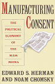

Corporate Journalism
By Steve Hoenisch
Copyright 1996-2025 Steve Hoenisch
www.Criticism.Com
This article was published in the book review section of Willamette
Week, the leading weekly newspaper in Portland, Oregon.
1 Read All About It
 Read All About
It: The Corporate Takeover of America’s Newspapers is an
institutional acknowledgement of what many wary readers have known for
years: Corporate control is ruining our daily newspapers.
Read All About
It: The Corporate Takeover of America’s Newspapers is an
institutional acknowledgement of what many wary readers have known for
years: Corporate control is ruining our daily newspapers.
Oh, excuse me: I didn’t mean to say “our” newspapers. It’s just that I’ve always thought of daily newspapers as the guardians of our – meaning the public’s – right to know. The guardians of truth, justice, the public welfare and all that.
But who am I fooling. America’s daily newspapers don’t belong to us. Nor, for that matter, do they even seek to serve us any longer. They have more important concerns now: appeasing advertisers and enriching stockholders. Read All About It, by James D. Squires, the editor of the Chicago Tribune from 1981 to 1989, explains why.
2 “Good Journalism Costs More”
The story goes like this: Before the 1970s, the traditional values of
public service journalism prevailed. Most of the publishing barons
remained devoted to the public welfare
 by putting the
quality of journalism above greed. Publishers knew, says Squires, that
good newspapers “profited less than the bad ones because good journalism
costs more.”
by putting the
quality of journalism above greed. Publishers knew, says Squires, that
good newspapers “profited less than the bad ones because good journalism
costs more.”
But inheritance taxes soon led many newspaper families to either take their companies public or sell them entirely. Enter, among others, acquisitions mogul Al Neuharth, an executive with Gannett Co. who, Squires says, “symbolized the coming of an era of press ownership of an entirely different nature.” Gannett and others of his ilk dangled their monopoly newspapers in front of Wall Street as, in Neuharth’s words, a “profit machine in good times or bad.” And Wall Street bit.
Newspaper ownership, Squires says, gradually passed “into the hands of corporate managers less concerned with press tradition than with business profitability.” And while corporations gobbled up shares as fast as papers were offering stock, they also accumulated power, which they couldn’t help but exercise. Corporate culture – along with its conformity and morality – arrived at daily newspapers.
The hard-boiled, chain-smoking editors of old, out to lynch any business or government agency guilty of treading on the public welfare, gave way to a new breed of journalists: suit-and-tie wearing executives willing to cross the formerly sacrosanct line between news and advertising to turn a bigger profit for the corporate master.
The drive for profits brought a new priority: the unyielding quest for cost reduction – which meant cutting back staff, a key determinant of the quality of news, and curtailing the amount of space given to news, the key factor in its quantity.
3 “The Dirty Little Secret”
But, in Squires’ view, undermining the quantity and quality of news isn’t corporate journalism’s biggest sin. “The dirty little secret,” as Squires puts it, is that newspapers claim the right of access to government – courtrooms, records, the president, etc. – “on the basis that it is an institution exercising the people’s right to know. Never does it claim the right to such access on the basis that it is in the business of delivering advertising information for profit.” (http://www.willametteweek.com/)
And it gets worse, Squires writes, because newspapers cut costs by trimming unprofitable circulation among low-income, minority readers to “improve the overall demographic profile of their audiences, which they then use to justify raising advertising rates. Thus, with few exceptions, the profitability of newspapers in monopoly markets has come to depend on an economic formula that is ethically bankrupt and embarrassing for a business that has always claimed to rest on a public trust.”
4 A View from the Inside
Although Squires supplies insights that only an industry insider could provide, he is not the first to document the corporate takeover of the media, which has been examined in such books as Manufacturing Consent by Noam Chomsky and Edward S. Herman and The Media Monopoly by Ben Bagdikian.
Unlike Chomsky, however, Squires stays well clear of a number-crunching, scholarly approach. Instead he uses his experiences at the Tribune to illuminate the intricacies of

the corporate monopoly on media ownership and its broader effects on content, including changes in the definition of news, the shaping of editorial opinions by marketing considerations, the tailoring of the news to attract advertisers, the shifts toward news as entertainment, and the conflicts of interest in reporting on businesses under the same corporate umbrella.Yet, to his discredit, Squires stops short of taking the leap of Chomsky and Bagdikian and analyzing whether corporate ownership has fostered a uniformity of perspective and content.
Nevertheless, the book proves to be fairly interesting reading for anyone wanting an inside look at how corporate greed is corrupting the news.